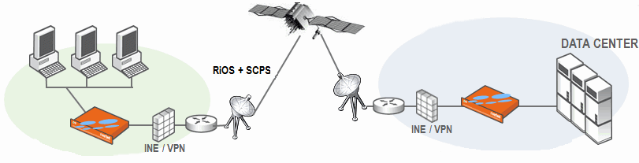
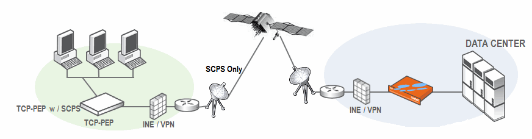

This section describes how to configure TCP, satellite optimization, and high-speed TCP settings. It includes the following section:Optimizing TCP and Satellite WANs High-Speed TCP Optimization You configure TCP, high-speed TCP, and satellite optimization settings in the Configure > Optimization > Transport Settings page.Riverbed provides satellite WAN optimization to overcome the common sources of performance loss associated with space networking. Satellite optimization allows for more effective use of satellite channels, while providing improved user experiences and increased productivity.SkipWare, now an exclusive technology in the Riverbed product family, is designed to sense increases and decreases in bandwidth allocation and automatically adjust its transmission window in response, without requiring user intervention.RiOS v7.0 and later includes compatibility settings for the Space Communications Protocol Standards (SCPS) protocol suite. SCPS is designed to allow communication over challenging environments. Originally, it was developed jointly by NASA and DOD’s USSPACECOM to meet their various needs and requirements. Through a collaborative, multiyear R&D effort, the partnership created the Space Communications Protocol Standards-Transport Protocol (SCPS-TP, commonly referred to as “skips”). This protocol now meets the needs of the satellite and wireless communities.Unlike TCP, the SCPS protocol was designed to operate in an environment of high latency and limited bandwidth. The first commercial implementation of the SCPS protocol was released under the brand name SkipWare.To use the SkipWare discovery mechanisms included in RiOS v7.0 and later, you must install a SkipWare license. SkipWare is enabled automatically when the license is installed, regardless of which transport optimization method is selected (for example, standard TCP, high-speed TCP, or bandwidth estimation). After installing the SkipWare license, you must restart the optimization service.The basic RiOS v6.5.x and later license includes non-SkipWare options such as bandwidth estimation and standard TCP.To change SkipWare settings, you must have role-based permission to use the Optimization Service role. For details, see Managing User Permissions.Important: Each Steelhead supports and can interoperate with another Steelhead running the SCPS RSP package. For details, see the SCPS Installation Guide. SCPS RSP package licenses are not valid for use as native RiOS SCPS licenses. Contact support or your sales team for assistance in converting SCPS RSP package licenses to native RiOS SCPS licenses.For details and example satellite deployments, see the Riverbed Deployment Guide.You configure satellite optimization settings depending on the connection type. The following sections describe the connection types. For details on the SCPS discovery process used in various device scenarios, see the Riverbed Deployment Guide.A RiOS and SCPS connection is established between two Steelhead appliances running RiOS v7.0 or later. Because both Steelheads are SCPS-compatible, this is a double-ended connection that benefits from traditional RiOS optimization (SDR and LZ). A RiOS and SCPS connection works with all RiOS features.Figure 3‑1. RiOS and SCPS ConnectionAn SEI connection is established between a single Steelhead appliance running RiOS v7.0 or later paired with a third-party device running TCP-PEP (Performance Enhancing Proxy). Both the Steelhead and the TCP-PEP device are using the SCPS protocol to speed up the data transfer on a satellite link or other high-latency links. In the following figure, the Steelhead replaces a third-party device running TCP-PEP in the data center, but the Steelhead can also reside in the branch office. Because there is only one Steelhead that intercepts the connection, this is called a single-ended interception (SEI).Figure 3‑2. Single-Ended Interception Connectionperforms only sender-side TCP optimization. supports virtual in-path deployments such as WCCP and PBR. cannot initiate a SCPS connection on a server-side out-of-path Steelhead. supports kickoff. supports auto-discovery failover. co-exists with high-speed TCP. does not work with connection forwarding. To configure satellite optimization for an SEI, you define SEI connection rules. The Steelhead uses SEI connection rules to determine whether to enable or pass-through SCPS connections.Riverbed recommends that for SEI configurations in which the Steelhead initiates the SCPS connection on the WAN, you add an in-path pass-through rule from the client to the server. While the pass-through rule is optional, without it the Steelhead probes for another Steelhead, and when it does not locate one, will failover. Adding the in-path pass-through rule speeds up setup by eliminating the auto-discovery probe and subsequent failover.The in-path pass-through rule is not necessary on SEI configurations in which the Steelhead terminates the SCPS connection on the WAN, because in this configuration the Steelhead evaluates only the SEI connection rules table and ignores the in-path rules table.Important: When server-side network asymmetry occurs in a SEI configuration, the server-side Steelhead creates a bad RST log entry in the asymmetric routing table. This differs from other configurations (non-SCPS) in that the client-side Steelhead appliance typically detects asymmetry because of the bad RST and creates an entry in the asymmetric routing table. In SEI configurations, the Steelhead detects asymmetry and creates asymmetric routing table entries independent of other Steelheads. This results in a TCP proxy only connection between the client-side Steelhead and the server when auto-discovery is disabled. For details on the asymmetric routing table, see Configuring Asymmetric Routing Features.To properly configure transport settings for the you environment, you need to understand its characteristics. For information on gathering performance characteristics for your environment, see the Riverbed Deployment Guide.
a pipe algorithm that gates when a packet should be sent after receipt of an ACK. the NewReno algorithm, which includes the sender's congestion window, slow start, and congestion avoidance. timestamps, window scaling, appropriate byte counting, and loss detection.
Enable - Enables a rule to optimize single-ended interception SCPS connections. Passthrough - Disables a rule to optimize single-ended interception SCPS connections. If you choose this option, single-ended interception SCPS connections pass through the Steelhead appliance unoptimized.
|
|